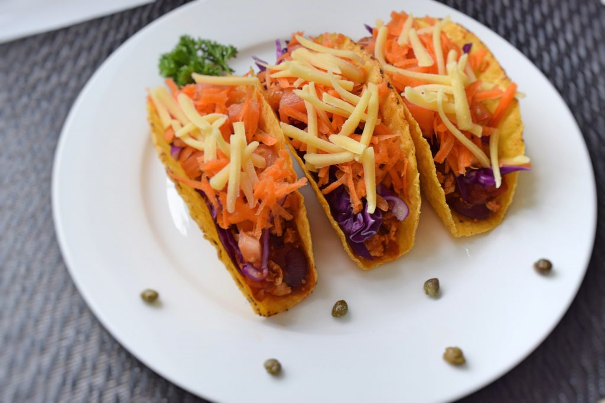

Įkaitinam orkaitę 180° C temperatūroje. Supilame aliejų į keptuvę ir įjungiam vidutinio stiprumo ugnį. Sudedam smulkintą svogūną su česnaku ir kepam apie 3-4 minutes tol kol suminkštės. Padidinam ugnį ir sudedam kalakutienos faršą, kepam apie 6 minutes vis smulkindami faršą tol kol nebeliks stambių gabaliukų. Į faršą sudedam pupeles, kukurūzus, kajeno pipirus. Viską gerai išmaišom ir paliekam kepti 10 minučių ant silpnos ugnies. Taco tortilijas dedam į orkaitę ir kepam 5 minutes. Su šaukštu pripildom tortilijas pagamintu faršo mišiniu, ant viršaus uždedam morkas ir sūrį.
Skanaus!
